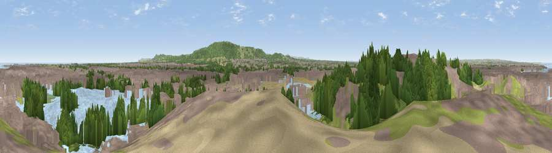

Viewpoint near Lazenby
#10770 in England · top 36% of its area beats it · near LazenbyThe view, rendered

A 360° render of this exact spot computed from the terrain model, tree cover and land cover — summer colours, afternoon light, calibrated against photographs of famous viewpoints. Real trees, hedges and buildings will differ in detail.
The panorama
Grey silhouette: terrain skyline in each direction (720 bearings, Earth curvature and refraction included). Dashed green: skyline with trees (+15 m) and buildings (+8 m) as obstacles. Blue strip: how far the ground is visible on each bearing.
Where the view opens
Wedge length = distance to the farthest visible ground on that bearing (vegetation-aware). Rings at 10, 25 and 50 km.
What fills the view
36% built-up · 25% woodland · 20% water · 14% grassland · 3% bare ground · 2% cropland
Angular shares of the visible panorama (visual magnitude), not map area. Landscape diversity 0.66 (0–1 Shannon).
Key numbers
More beautiful places nearby
The staircase of upgrades: each row has a higher view potential than everything closer. Driving times are estimates from straight-line distance, calibrated against real road routing — check an actual route before setting out.
| Place | Direction | Drive | Score |
|---|---|---|---|
| Viewpoint near Port Clarence | W · 3 km | ~7 min | 62.4 |
| Viewpoint near Lazenby | SSE · 4 km | ~10 min | 86.4 |
| Warsett Hill | E · 15 km | ~26 min | 86.8 |
| Viewpoint near Easington | E · 20 km | ~33 min | 90.2 |
| The Knoll | SSW · 446 km | ~417 min | 91.0 |
54.59047, -1.15618 · source: screening · position refined by local search. Computed location — check access rights before visiting.